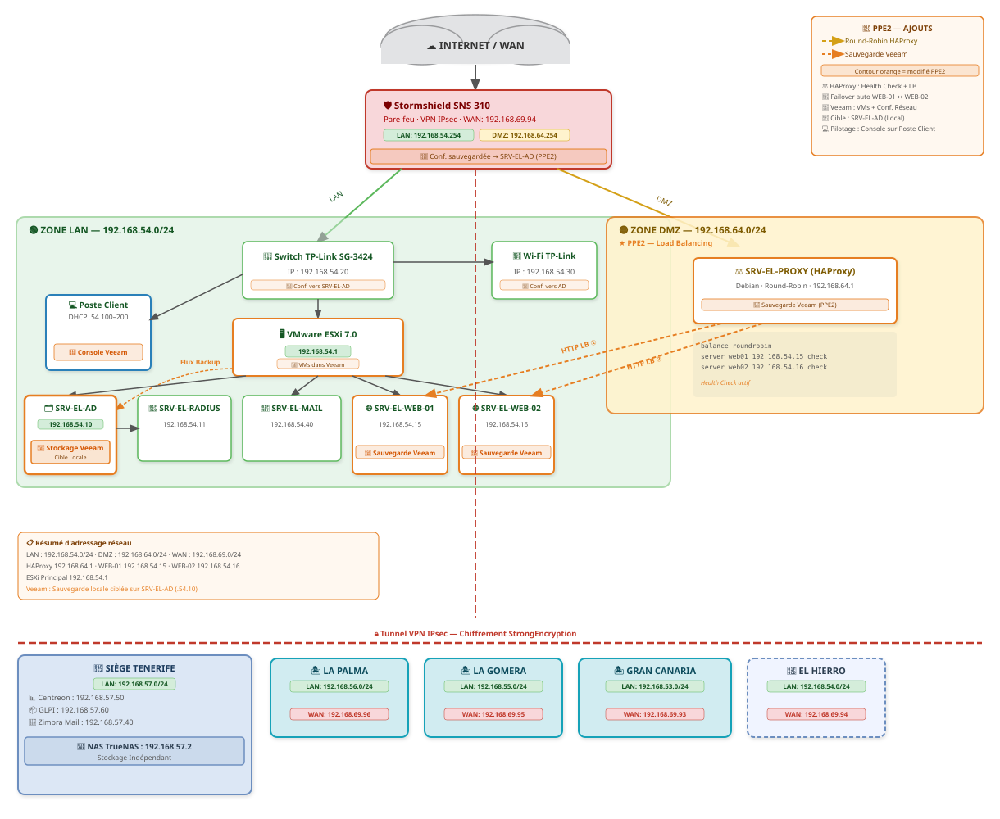

RP 2 – Parcours de professionnalisation
Projet CICAR 🚗
Externalisation des serveurs de réservation, mise en place d'un load balancing et d'une solution de sauvegarde automatisée pour une agence de location automobile aux Îles Canaries.
La demande
Présentation de l'entreprise
CICAR est une société de location automobile implantée aux Îles Canaries,
avec un siège social à Tenerife et plusieurs agences locales interconnectées via des tunnels
VPN IPsec. Dans le cadre de ce projet, l'agence concernée est celle
d'El Hierro (Valverde), opérant sur le réseau 192.168.54.0/24.
Suite à une panne inter-îles ayant paralysé le système de réservation pendant plusieurs heures, la direction a décidé d'externaliser localement les serveurs de réservation afin de ne plus dépendre uniquement de la connectivité avec le siège. Un mécanisme de répartition de charge et une sauvegarde automatique vers le NAS du siège étaient également attendus.
Objectifs du projet
- ➜ Mettre en place une architecture trois-tiers : HAProxy en DMZ → deux serveurs web en miroir dans le LAN
- ➜ Configurer un load balancing round-robin avec détection automatique de panne
- ➜ Assurer des sauvegardes quotidiennes des VMs vers le NAS RAID-5 du siège via Veeam
- ➜ Sauvegarder les configurations des équipements réseau (Stormshield, switch, AP)
- ➜ Réaliser les tests de basculement et mettre à jour la documentation technique
Le plan
Plan d'adressage IP
L'infrastructure est répartie entre l'agence d'El Hierro et le siège de Tenerife, reliés par un tunnel VPN IPsec. Voici le plan d'adressage complet :
| Équipement / VM | Rôle | Adresse IP | Accès |
|---|---|---|---|
| 🏢 Agence El Hierro — 192.168.54.0/24 | |||
| Stormshield SNS 310 | Pare-feu / VPN | 192.168.54.254 |
Interface web admin |
| AD / DNS / DHCP | Windows Server 2019 | 192.168.54.10 |
RDP |
| SRV-EL-WEB-01 | Serveur Apache | 192.168.54.15 |
SSH |
| SRV-EL-WEB-02 | Serveur Apache | 192.168.54.16 |
SSH |
| SRV-EL-PROXY | HAProxy (DMZ) | 192.168.64.1 |
SSH |
| ESXi principal | Hyperviseur LAN | 192.168.54.1 |
Interface web ESXi |
| ESXi secondaire | Hyperviseur (Load Balancing) | 192.168.69.94 |
Interface web ESXi |
| TP-Link SG-3424 | Switch manageable LAN | 192.168.54.20 |
Interface web admin |
| AP WiFi WA901N | Borne WiFi 802.1X | 192.168.54.30 |
Interface web admin |
| 🏢 Siège Tenerife — 192.168.57.0/24 | |||
| Zimbra Mail | Messagerie | 192.168.57.40 |
HTTPS / interface admin |
| Centreon | Supervision SNMP | 192.168.57.50 |
HTTPS |
| TrueNAS | NAS RAID-5 (destination Veeam) | 192.168.57.2 |
Interface web admin |
Schéma d'infrastructure

Le projet
🏗️ 1. Architecture trois-tiers
Les requêtes HTTP/HTTPS en provenance d'Internet arrivent sur le pare-feu Stormshield,
qui les redirige par NAT vers le serveur HAProxy en DMZ (192.168.64.1).
HAProxy se charge ensuite de distribuer la charge en round-robin entre les deux serveurs
web situés dans le LAN : WEB-01 (192.168.54.15) et WEB-02 (192.168.54.16).
Cette séparation en trois zones distinctes (WAN → DMZ → LAN) renforce la sécurité
de l'infrastructure en limitant l'exposition directe des serveurs applicatifs.
 Règles autorisant HTTP/HTTPS depuis le WAN vers la DMZ (HAProxy), et depuis la DMZ vers le LAN (WEB-01, WEB-02)
Règles autorisant HTTP/HTTPS depuis le WAN vers la DMZ (HAProxy), et depuis la DMZ vers le LAN (WEB-01, WEB-02)
⚙️ 1.1 Configuration Apache sur les serveurs web
Chaque serveur héberge un site web indépendant. Le virtual host Apache est configuré
pour répondre sur le domaine el-cicars.es et servir les fichiers
depuis le répertoire /var/www/el-cicars.
Cette indépendance entre les deux serveurs garantit la continuité de service
même si l'un d'eux est hors ligne.
<VirtualHost *:80>
ServerName el-cicars.es
ServerAlias www.el-cicars.es
DocumentRoot /var/www/el-cicars
ErrorLog ${APACHE_LOG_DIR}/el-cicars_error.log
CustomLog ${APACHE_LOG_DIR}/el-cicars_access.log combined
</VirtualHost>
# Activation du site et rechargement d'Apache
a2ensite el-cicars.conf
systemctl reload apache2
⚖️ 2. Load Balancing avec HAProxy
HAProxy est configuré en mode HTTP avec un algorithme de répartition round-robin
et des health checks actifs. À chaque requête entrante, HAProxy interroge
les deux serveurs web pour s'assurer qu'ils sont disponibles (option httpchk GET /).
En cas de panne de l'un d'eux, le trafic est automatiquement redirigé vers l'autre
sans aucune intervention manuelle ni interruption de service côté utilisateur.
frontend http_front
bind *:80
default_backend web_cluster
backend web_cluster
balance roundrobin
option httpchk GET /
server web01 192.168.54.15:80 check
server web02 192.168.54.16:80 check
 Fichier haproxy.cfg avec le frontend HTTP, le backend round-robin et les deux serveurs WEB-01 / WEB-02
Fichier haproxy.cfg avec le frontend HTTP, le backend round-robin et les deux serveurs WEB-01 / WEB-02
🔁 2.1 Test de basculement (Failover)
Pour valider la continuité de service, le serveur WEB-01 a été arrêté volontairement
via la commande systemctl stop apache2. HAProxy a détecté la panne en environ
2 secondes grâce au health check et a basculé automatiquement l'ensemble du trafic
vers WEB-02, sans aucune interruption perceptible côté client.
Au redémarrage d'Apache sur WEB-01, le round-robin a repris normalement.
 Site principal. En cas de panne, HAProxy retire ce serveur du pool et bascule sur WEB-02.
Site principal. En cas de panne, HAProxy retire ce serveur du pool et bascule sur WEB-02.
💾 3. Sauvegardes des VMs avec Veeam
Veeam Backup & Replication est installé au siège de Tenerife. Les sauvegardes des machines
virtuelles de l'agence d'El Hierro (WEB-01, WEB-02, PROXY, AD) sont déclenchées depuis
la console Veeam et transférées via le tunnel VPN IPsec vers le NAS RAID-5 du siège
(SRV-Truenas-TF — 192.168.57.2). Cette solution garantit qu'en cas de sinistre
local, les VMs peuvent être restaurées rapidement à partir du siège.
La planification automatique des jobs est prévue en évolution du projet.
 Job de sauvegarde "essai" pour l'agence El Hierro — Statut : Success — Destination : NAS TrueNAS (siège Tenerife)
Job de sauvegarde "essai" pour l'agence El Hierro — Statut : Success — Destination : NAS TrueNAS (siège Tenerife)
🔧 4. Sauvegarde des configurations équipements réseau
En complément des sauvegardes de VMs, les fichiers de configuration des équipements d'interconnexion sont exportés et stockés sur le NAS du siège : pare-feu Stormshield, switch TP-Link SG-3424 et point d'accès WiFi. Cette précaution permet de restaurer rapidement la configuration réseau en cas de remplacement d'un équipement défaillant.
 Interface Stormshield — Système → Maintenance → Sauvegarde de configuration. Le fichier exporté est ensuite déposé sur le NAS du siège.
Interface Stormshield — Système → Maintenance → Sauvegarde de configuration. Le fichier exporté est ensuite déposé sur le NAS du siège.
ssh admin@192.168.54.20
copy startup-config tftp 192.168.54.10 backup_switch_elhierro.cfg
✅ 5. Vérifications finales
Une fois l'ensemble des éléments déployés, plusieurs vérifications ont été effectuées pour s'assurer du bon fonctionnement de l'infrastructure : état des services Apache sur les deux serveurs web, lecture des logs HAProxy en temps réel pour confirmer la répartition du trafic, et test de résolution DNS pour valider la cohérence de la configuration AD/DNS.
systemctl status apache2
# Lecture des logs HAProxy en temps réel
tail -f /var/log/haproxy.log
# Test de résolution DNS via le serveur AD
nslookup el-cicars.es 192.168.54.10
📋 Livrables validés
Schéma réseau final

Architecture complète incluant l'externalisation sur El Hierro, le load balancing HAProxy et les sauvegardes Veeam vers le siège de Tenerife